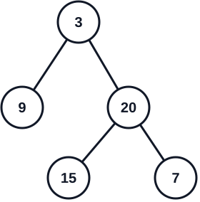

105. 从前序与中序遍历序列构造二叉树
题目与约束
给定两个整数数组 preorder 和 inorder ，其中 preorder 是二叉树的先序遍历， inorder 是同一棵树的中序遍历。请你构造并返回这棵二叉树。
(题目保证输入的数据是一棵有效的二叉树，且树中没有重复元素)
示例 1：

输入：preorder = [3,9,20,15,7]，inorder = [9,3,15,20,7]
输出：[3,9,20,null,null,15,7]
示例 2：
输入：preorder = [-1]，inorder = [-1]
输出：[-1]
核心不变量
前序决定根，中序决定左右子树边界。
完整推导
思路推导
- 直觉与痛点（两份线索的作用分别是什么？）：
只看前序遍历，我们能确定“谁先当根”，却不知道根的左边有多少节点、右边有多少节点；只看中序遍历，虽然根一旦确定就能用它把序列切成左右两半，但中序本身没有告诉我们根是谁。单独一份线索都不够：前序给出根的身份和访问顺序，中序给出左右子树的边界。
把两份线索放在一起，就能逐层还原：前序区间的第一个值是当前子树的根；去中序中找到这个值，它左边的部分就是左子树，右边的部分就是右子树。题目保证节点值不重复，所以根在中序里的位置唯一，左右边界也就唯一。
- 拿示例走一遍（先定根，再切左右）：
preorder = [3, 9, 20, 15, 7]
inorder = [9, 3, 15, 20, 7]
- 前序第一个值
3是整棵树的根。在中序中找到3，它左边是[9]，右边是[15, 20, 7]。因此左子树有 1 个节点，右子树有 3 个节点。 - 前序中紧跟在根后面的 1 个值属于左子树，所以左子树的前序是
[9]；剩余的[20, 15, 7]属于右子树。 - 对右子树重复同一过程：它的前序第一个值
20是根；在对应的中序部分[15, 20, 7]中，20左边是[15]，右边是[7]。
最终得到：
3
/ \
9 20
/ \
15 7
- 破局思路（用区间代表一棵子树）：
递归函数不必真的复制出新的前序、中序子数组，只需分别记录这棵子树在两个数组中的闭区间：[preStart, preEnd] 和 [inStart, inEnd]。这样每次递归只传几个下标，不会反复切片、复制数组。
- 定根：当前子树的根是
preorder[preStart]。 - 找边界：用哈希表查出根在中序中的位置
inRoot。inStart到inRoot - 1是左子树，inRoot + 1到inEnd是右子树。 - 算左子树节点数：
leftSize = inRoot - inStart。前序里根后面的leftSize个元素属于左子树，剩下的属于右子树。 - 递归并接回指针：左、右两边分别按各自对应的前序区间和中序区间继续构造，返回的节点接到
root.left、root.right。 - 停止条件：若区间为空（起点大于终点），说明这边没有节点，返回
null。
把区间边界写出来，能避免最容易错的“前序切分下标”：
左子树 preorder: [preStart + 1, preStart + leftSize]
左子树 inorder: [inStart, inRoot - 1]
右子树 preorder: [preStart + leftSize + 1, preEnd]
右子树 inorder: [inRoot + 1, inEnd]
这里有个重要对应关系：前序区间中，根后面的左子树节点数，必须与中序根左侧的节点数相同。两边区间长度相等，递归拿到的才是同一棵子树的两份遍历线索。
- 逻辑推演（为什么哈希表能把复杂度降到
O(n)）：
如果每次都从中序区间里顺序查找根，树越偏斜，反复查找的总成本越高，最坏会到 O(n^2)。先把“节点值 → 中序下标”放进 HashMap，每个根的位置就能平均 O(1) 查到；之后每个节点只创建、处理一次，整体时间为 O(n)。哈希表占 O(n)，递归栈占 O(h)（h 是树高），总空间为 O(n)。
Java 实现（哈希表 O(N) 优化版）
import java.util.HashMap;
import java.util.Map;
/**
* Definition for a binary tree node.
* public class TreeNode {
* int val;
* TreeNode left;
* TreeNode right;
* TreeNode() {}
* TreeNode(int val) { this.val = val; }
* TreeNode(int val, TreeNode left, TreeNode right) {
* this.val = val;
* this.left = left;
* this.right = right;
* }
* }
*/
class Solution {
// 准备一个全局“雷达”，用来瞬间在 inorder 中找到老大
private Map<Integer, Integer> inMap = new HashMap<>();
public TreeNode buildTree(int[] preorder, int[] inorder) {
// 将中序遍历的值和对应的索引存入哈希表，实现 O(1) 的超快查找
for (int i = 0; i < inorder.length; i++) {
inMap.put(inorder[i], i);
}
// 开始建树大业！初始范围是整个数组
return build(preorder, 0, preorder.length - 1,
inorder, 0, inorder.length - 1);
}
// 辅助函数：在指定的前序和中序范围内，构建二叉树
private TreeNode build(int[] preorder, int preStart, int preEnd,
int[] inorder, int inStart, int inEnd) {
// 终止条件：当起始游标跑到了结束游标的右边，说明这块地盘已经没兵了
if (preStart > preEnd || inStart > inEnd) {
return null;
}
// 1. 【认老大】：前序遍历范围里的第一个元素，就是当前子树的根节点！
int rootVal = preorder[preStart];
TreeNode root = new TreeNode(rootVal);
// 2. 【找定位】：用哈希表瞬间找到老大在中序遍历里的位置
int inRoot = inMap.get(rootVal);
// 3. 【点人数】：算出左子树一共分到了几个人
int leftSize = inRoot - inStart;
// 4. 【分封诸侯】：带着计算好的新边界，递归构建左右子树
// 左子树的前序阵营：从老大后面一个开始，数 leftSize 个人
// 左子树的中序阵营：从最左边开始，到老大前面一个结束
root.left = build(preorder, preStart + 1, preStart + leftSize,
inorder, inStart, inRoot - 1);
// 右子树的前序阵营：跳过老大和左子树的所有人，剩下的全包
// 右子树的中序阵营：从老大后面一个开始，到最右边结束
root.right = build(preorder, preStart + leftSize + 1, preEnd,
inorder, inRoot + 1, inEnd);
// 5. 汇报战果
return root;
}
}
C++ 实现
实现来源：经典解法实现
- 前序第一个元素是根；在中序中定位根，左边是左子树、右边是右子树
- 递归：左子树用前序下一段 + 中序左段，右子树同理
- 用哈希表存中序值→下标，定位 O(1)
class Solution {
unordered_map<int, int> inIdx;
public:
TreeNode* build(vector<int>& pre, int preL, int preR, int inL, int inR) {
if (preL > preR) return nullptr;
TreeNode* node = new TreeNode(pre[preL]);
int mid = inIdx[pre[preL]], leftSize = mid - inL;
node->left = build(pre, preL + 1, preL + leftSize, inL, mid - 1);
node->right = build(pre, preL + leftSize + 1, preR, mid + 1, inR);
return node;
}
TreeNode* buildTree(vector<int>& preorder, vector<int>& inorder) {
for (int i = 0; i < inorder.size(); i++) inIdx[inorder[i]] = i;
return build(preorder, 0, preorder.size() - 1, 0, inorder.size() - 1);
}
};
Python 实现
实现来源：经典解法实现
- 前序第一个元素是根；在中序中定位根，左边是左子树、右边是右子树
- 递归：左子树用前序下一段 + 中序左段，右子树同理
- 用哈希表存中序值→下标，定位 O(1)
class Solution:
def buildTree(self, preorder: List[int], inorder: List[int]) -> TreeNode:
idx = {v: i for i, v in enumerate(inorder)}
def build(pre_l, pre_r, in_l, in_r):
if pre_l > pre_r:
return None
root_val = preorder[pre_l]
mid = idx[root_val]
left_size = mid - in_l
node = TreeNode(root_val)
node.left = build(pre_l + 1, pre_l + left_size, in_l, mid - 1)
node.right = build(pre_l + left_size + 1, pre_r, mid + 1, in_r)
return node
return build(0, len(preorder) - 1, 0, len(inorder) - 1)
Go 实现
实现来源：经典解法实现
- 前序第一个元素是根；在中序中定位根，左边是左子树、右边是右子树
- 递归：左子树用前序下一段 + 中序左段，右子树同理
- 用哈希表存中序值→下标，定位 O(1)
func buildTree(preorder []int, inorder []int) *TreeNode {
idx := map[int]int{}
for i, v := range inorder { idx[v] = i }
var build func(preL, preR, inL, inR int) *TreeNode
build = func(preL, preR, inL, inR int) *TreeNode {
if preL > preR { return nil }
rootVal := preorder[preL]
mid := idx[rootVal]
leftSize := mid - inL
node := &TreeNode{Val: rootVal}
node.Left = build(preL+1, preL+leftSize, inL, mid-1)
node.Right = build(preL+leftSize+1, preR, mid+1, inR)
return node
}
return build(0, len(preorder)-1, 0, len(inorder)-1)
}
C 实现
实现来源：经典解法实现
- 前序第一个元素是根；在中序中定位根，左边是左子树、右边是右子树
- 递归：左子树用前序下一段 + 中序左段，右子树同理
- 用哈希表存中序值→下标，定位 O(1)
struct TreeNode* build(int* pre, int preL, int preR, int* in, int inL, int inR) {
if (preL > preR) return NULL;
struct TreeNode* node = malloc(sizeof(struct TreeNode));
node->val = pre[preL];
int mid = inL;
while (in[mid] != pre[preL]) mid++; /* 中序定位根 */
int leftSize = mid - inL;
node->left = build(pre, preL + 1, preL + leftSize, in, inL, mid - 1);
node->right = build(pre, preL + leftSize + 1, preR, in, mid + 1, inR);
return node;
}
struct TreeNode* buildTree(int* preorder, int preorderSize, int* inorder, int inorderSize) {
return build(preorder, 0, preorderSize - 1, inorder, 0, inorderSize - 1);
}
复杂度
- 时间复杂度：O(N)。由于我们在一开始用 HashMap 存储了中序遍历的索引，每次查找根节点只需要 O(1) 的时间。整个构建过程只需要对每个节点访问一次。
- 空间复杂度：O(N)。使用了 HashMap 来存储中序数组的元素和索引映射，消耗 O(N) 空间。同时递归调用栈最深为 O(H)，所以总体空间复杂度为 O(N)。
- 踩坑警告：为什么必须要用
HashMap？ - 在很多新手的代码里，他们会在build函数内部写一个for循环，去inorder数组里挨个找rootVal。 - 致命后果：如果在递归里嵌套for循环，最坏情况下（树退化成链表），每次找老大都要遍历整个数组，时间复杂度会直接飙升到 O(N2)！在 LeetCode 上遇到大数据量会直接超时。面试面试官极度看重这种空间换时间的 O(1) 优化嗅觉。 - 面试追问：“如果给你的数组里有【重复元素】，这个算法还能奏效吗？”
- 满分抢答：不能！ 这个算法的绝对前提是“无重复元素”。如果
inorder里有两个3，我们的 HashMap 雷达就懵了，它不知道前序遍历里的老大3到底对应中序里的哪个3。这种情况下，一棵前序和中序序列可能会还原出多种不同的二叉树形态。